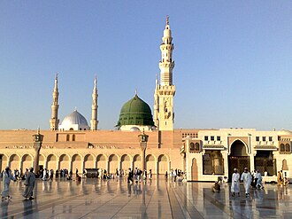

تقديم
La mosquée du Prophète à Médine, en Arabie saoudite, est la deuxième mosquée la plus sainte de l'islam après Masjid al-Haram à La Mecque et avant la mosquée d'Al-Aqsa, à Jérusalem.
ٱلْمَسْجِدُ ٱلنَّبَوِيّ أو ٱلْحَرَمُ ٱلنَّبَوِيّ أو مَسْجِدُ ٱلنَّبِيّ أحد أكبر المساجد في العالم وثاني أقدس موقع في الإسلام ، وهو المسجد الذي بناه النبي محمد في المدينة المنورة بعد هجرته سنة 1 هـ الموافق 622 بجانب بيته بعد بناء مسجد قباء. مرّ المسجد بعدّة توسعات عبر التاريخ، مروراً بعهد الخلفاء الراشدين والدولة الأموية والعباسية والعثمانية، وأخيراً في عهد الدولة السعودية حيث تمت أكبر توسعة له عام 1994. ويعتبر المسجد النبوي أول مكان في شبه الجزيرة العربية يتم فيه الإضاءة عن طريق استخدام المصابيح الكهربائية عام 1327 هـ الموافق 1909.
The Prophet's Mosque is the second mosque built by the Islamic prophet Muhammad in Medina, after the Quba Mosque, as well as the second largest mosque and holiest site in Islam, after the Masjid al-Haram in Mecca, in the Saudi region of the Hejaz. The mosque is located at the heart of Medina, and is a major site of pilgrimage that falls under the purview of the Custodian of the Two Holy Mosques.
Mescid-i Nebevî, Mescid-i Nebi ya da Peygamber Mescidi, Hicret'ten sonra Medine'de İslam peygamberi Muhammed ile arkadaşları tarafından inşa edilen, Muhammed'in kabrinin de içerisinde bulunduğu mescit. "Nebevi" Arapçada "peygambere ait" anlamına gelir, "Mescid-i Nebevî" tamlamasının anlamı ise "Peygamber Mescidi"dir. Mekke'de bulunan Mescid-i Haram'dan sonra Müslümanlara göre ikinci en kutsal mescittir.
Masjid Nabawi adalah masjid kedua yang dibangun oleh nabi Islam Muhammad di Madinah, setelah Masjid Quba, sekaligus masjid terbesar kedua dan tempat tersuci kedua dalam Islam, setelah Masjidilharam di Makkah, di wilayah Arab Saudi Hijaz. Masjid ini terletak di jantung kota Madinah dan merupakan tempat penting untuk ziarah yang berada di bawah tupoksi Penjaga Dua Kota Suci.
مسجد نبوی دنیا کی سب سے بڑی مساجد میں سے ایک ہے اور اسلام کا دوسرا مقدس ترین مقام ہے۔ مکہ مکرمہ میں مسجد حرام مسلمانوں کے لیے مقدس ترین مقام ہے جبکہ بیت المقدس میں مسجد اقصی اسلام کا تیسرا مقدس مقام ہے۔ مسجد نبوی سعودی عرب کے شہر مدینہ منورہ میں واقع ہے۔ تاریخ میں مسجد نبوی میں کئی بار توسیع کی گئی جن میں خلفائے راشدین، خلافت امویہ، خلافت عباسیہ، سلطنت عثمانیہ اور آخر کار سعودی ریاست کے دور میں توسیع ہوئیں۔ سعودی دور میں اس کی سب سے بڑی توسیع 1994ء میں ہوئی تھی۔ مسجد نبوی جزیرہ نما عرب میں پہلی جگہ ہے جسے 1909ء میں برقی چراغوں کے استعمال سے روشن کیا گیا تھا۔ عمر بن عبدالعزیز کی طرف سے 91 ہجری میں توسیع کے بعد حجرہ نبوی کو مسجد میں شامل کیا گیا جس میں نبی اکرم صلی اللہ علیہ وسلم، ابوبکر صدیق اور عمر بن خطاب کو دفن کیا گیا تھا، اور اس پر گنبد خضریٰ بنایا گیا تھا، یہ مسجد نبوی کے سب سے نمایاں نشانیوں میں سے ایک ہے۔ مسجد نبوی نے سیاسی اور سماجی زندگی میں ایک اہم کردار ادا کیا، کیونکہ یہ ایک
Die Prophetenmoschee in Medina ist nach der al-Harām-Moschee in Mekka die zweitheiligste Moschee im Islam. Für Nicht-Muslime ist sie nicht zugänglich. Im Inneren befindet sich die Grabstätte Mohammeds, errichtet über seinem Wohnhaus.
La Mezquita del Profeta es una mezquita establecida y construida originalmente por el profeta islámico Mahoma, ubicada en Medina, en la región de Hiyaz en Arabia Saudita. Fue la tercera mezquita construida en la historia del Islam y ahora es una de las más grandes del mundo. Es la segunda mezquita más sagrada del islam —entre la Gran Mezquita de La Meca y la mezquita de Al-Aqsa —. La mezquita original fue construida por el profeta Mahoma. Los siguientes califas aumentaron el tamaño y la decoración de la mezquita. La mezquita original no era muy grande y solo representaba una pequeña parte de la actual mezquita. El tamaño de la mezquita se aumentó de modo considerable tras la fundación de Arabia Saudita. La última renovación tuvo lugar bajo el rey Fahd. Siempre está abierta, independientemente de la fecha o la hora, con la única excepción en los últimos tiempos siendo la pandemia por coro
La moschea del Profeta è la seconda moschea più sacra per l'Islam. Questa sorge sul luogo in cui, fin dal 622, Maometto fece edificare un locale destinato alla preghiera, attiguo alla stessa abitazione costruitagli non appena giunto a Medina.
Mesquita do Profeta é uma mesquita estabelecida e originalmente construída pelo profeta islâmico Maomé, situada na cidade de Medina da região de Hejaz, na Arábia Saudita. Foi a terceira mesquita construída ao longo da história do Islão, e é actualmente uma das maiores mesquitas do mundo. É o segundo local mais sagrado do Islão, depois da Grande Mesquita de Meca. Está aberta todo o ano, 24 horas por dia, sete dias por semana.
De Moskee van de Profeet of de Masjid an-Nabawi is een moskee in de Arabische stad Medina. Omdat de moskee het graf van Mohammed herbergt, wordt het door de moslims beschouwd als een van de belangrijkste plaatsen in de Islam. De moskee is na Al-Masjid al-Haram in Mekka de grootste moskee ter wereld.
先知清真寺一般简称先知寺，又名麦地那清真寺，是一座位于伊斯兰教第二大圣地麦地那的清真寺，是仅次于麦加禁寺的伊斯兰教第二大圣寺，也是伊斯兰教史上继库巴清真寺之后第二座清真寺。
預言者のモスク は、サウジアラビアのマディーナ（メディナ）にあるイスラム教の礼拝堂・モスクで、イスラム教の第2の聖地。預言者ムハンマドの霊廟でもある。
예언자의 모스크(아랍어: اَلْمَسْجِد اَلنَّبَوِي, "알 마스지드 안 나바위")는 사우디아라비아 메디나에 있는 이슬람교 예배당이다. 모스크에서 이슬람교 제2의 성지이자 예언자 무함마드의 사당이다.
मस्जिद-ए-नबवी, सऊदी अरब के शहर मदीना में वाक़ी इस्लाम का दूसरा मुक़द्दस तरीन मक़ाम है।
Аль-Масджи́д ан-Набави́ — вторая святыня ислама после мечети аль-Харам в Мекке. Является второй самой крупной мечетью в мире. Место погребения пророка Мухаммеда.
Al-Masjid an-Nabawī là một nhà thờ Hồi giáo do Nhà tiên tri Muhammad của Hồi giáo khởi xây nên, tọa lạc tại thành phố Medina tại Ả Rập Xê Út. Al-Masjid an-Nabawi là nhà thờ Hồi giáo thứ ba được xây dựng nên trong lịch sử Hồi giáo và là một trong những nhà thờ Hồi giáo lớn nhất thế giới ngày nay. Đây là địa điểm thiêng liêng thứ hai trong thế giới Hồi giáo, chỉ sau nhà thờ Masjid al-Haram ở thánh địa Mecca. Nhà thờ luôn mở cửa bất kể ngày tháng hay giờ giấc.
มัสยิดอันนะบะวี เป็นมัสยิดที่สองที่สร้างขึ้นโดยศาสดามุฮัมมัดที่มะดีนะฮ์ (สร้างหลังจากมัสยิดกุบาอ์) และมัสยิดที่ใหญ่เป็นอันดับ 2 กับสถานที่ศักดิ์สิทธิ์ในศาสนาอิสลามอันดับ 2 (เป็นรองเพียงมัสยิดอัลฮะรอมที่มักกะฮ์) ในแคว้นฮิญาซ ประเทศซาอุดีอาระเบีย
al-Masjid an-Nabawi är en moské i Medina i Hijaz i Saudiarabien och räknas som den näst heligaste platsen inom islam. När Muhammed först kom till Medina efter emigrationen (hijra) från Mecka, byggde han en moské som nu kallas Masjid an-Nabawi, nära hans hem. Moskén har varit en viktig inspirationskälla till senare islamisk arkitektur.
Moscheea Profetului din Medina sau Masjid al-Nabawi este cea mai importantă moschee din Medina, Arabia Saudită. Ea este a doua cea mai mare moschee din lume, după Moscheea Sfântă din Mecca, și al doilea cel mai sfânt loc al islamului, tot după moscheea din Mecca. De asemenea ea este a doua cea mai veche moschee din lume, după Moscheea Quba, tot din Medina.
قصص وروايات
رواية ضعيفة السندتميم الداري وأوّل القناديل
كان المسجد النبوي في أوّل أمره يُسرَج ليلًا بسعف النخل. فقدم تميم الداري، وهو صحابي جاء من الشام، بقناديل وزيت وحبال، فعُلّقت ليلة جمعة وأسرجها. فوجد النبي ﷺ المسجد يزهر، فسأل: من فعل هذا؟ قالوا: تميم. فقال: « نوّرتَ الإسلام، نوّر الله عليك في الدنيا والآخرة ». ذكر هذه القصة أصحاب كتب تراجم الصحابة (ابن حجر في الإصابة) بإسناد ضعيف؛ وأما أثر « أوّل من أسرج في المساجد تميم الداري » (ابن ماجه 760) فضعيف جدًا.
حديث صحيححنين الجذع
كان النبي ﷺ يخطب يوم الجمعة مستندًا إلى جذع نخلة. فلمّا صُنع له المنبر وصعد عليه، صاح الجذع كما يصيح الصبي. فنزل النبي ﷺ فضمّه إليه، فجعل يئنّ حتى سكن. وقال: إنه بكى على ما كان يسمع من الذكر.
المصدر: al-Bukhari 3584
حديث صحيحأهل الصُّفّة وقدح اللبن
كانت في مؤخّر المسجد سقيفة، هي الصُّفّة، يأوي إليها فقراء الصحابة ممن لا أهل لهم ولا مال، وكان أبو هريرة منهم. وفي يوم اشتدّ فيه جوعه، أمره النبي ﷺ أن يدعو أهل الصفة كلهم ليشربوا من قدح لبن واحد. فخشي أبو هريرة ألّا يبقى له شيء. فشربوا جميعًا حتى رَوُوا، ثم شرب هو، ثم النبي ﷺ.
المصدر: al-Bukhari 6452
حديث صحيحأرض اليتيمين واللَّبِن
في المدينة بركت ناقة النبي ﷺ في مِربَد يُجفَّف فيه التمر، وكان لغلامين يتيمين هما سهل وسهيل. فأرادا أن يهباه، فأبى النبي ﷺ أن يقبله هبة حتى ابتاعه منهما. ثم جعل ينقل اللَّبِن بنفسه مع أصحابه لبناء المسجد.
المصدر: al-Bukhari 3906
حديث صحيحأوّل أذان
كان المسلمون يتشاورون كيف يجمعون الناس للصلاة: بناقوس أم ببوق؟ فرأى عبد الله بن زيد في منامه رجلًا علّمه كلمات الأذان. فقال النبي ﷺ: إنها لرؤيا حق، وأمره أن يلقيها على بلال فإنه أندى صوتًا. وجاء عمر فقال إنه رأى مثل ما رأى.
المصدر: Abu Dawud 499
حديث صحيحروضة من رياض الجنة
قال النبي ﷺ: «ما بين بيتي ومنبري روضة من رياض الجنة، ومنبري على حوضي». وهذه البقعة الصغيرة بين الحجرة التي كان يسكنها والمنبر الذي كان يخطب عليه تُسمّى اليوم «الروضة الشريفة». ويميّزها السجاد الأخضر الذي يختلف عن السجاد الأحمر في سائر المسجد. ويصبر الزوار طويلًا ليصلّوا فيها لحظات. والحديث صحيح رواه البخاري ومسلم.
المصدر: Sahih al-Bukhari 1196 · Sahih Muslim 1391
حديث صحيحصلاة بألف صلاة
قال النبي ﷺ: «صلاة في مسجدي هذا خير من ألف صلاة فيما سواه إلا المسجد الحرام». وقال أيضًا: «لا تُشدّ الرحال إلا إلى ثلاثة مساجد: المسجد الحرام، ومسجد الرسول ﷺ، ومسجد الأقصى». ولهذا يمرّ كثير من الحجاج والمعتمرين بالمدينة قبل مكة أو بعدها. والحديثان صحيحان رواهما البخاري.
المصدر: Sahih al-Bukhari 1190 · Sahih al-Bukhari 1189
حديث صحيحالأعرابي ورفق النبي ﷺ
قام أعرابي فبال في طائفة من المسجد، فتناوله الناس ليزجروه، فقال لهم النبي ﷺ: «دعوه». ثم أمر بدلو من ماء فأُريق على موضع بوله، وقال: «فإنما بُعثتم ميسّرين، ولم تُبعثوا معسّرين». وفي روايات أخرى أنه ﷺ دعا الرجل وعلّمه برفق أن المساجد إنما هي لذكر الله والصلاة. والحديث صحيح رواه البخاري ومسلم.
المصدر: Sahih al-Bukhari 220 · Sahih Muslim 285
حديث صحيحالتي كانت تقمّ المسجد
كانت امرأة سوداء، أو رجل أسود على الشك في بعض الروايات، تقمّ مسجد النبي ﷺ. فماتت ودُفنت ليلًا ولم يُخبَر النبي ﷺ لأن الناس استصغروا شأنها. فلما افتقدها وعلم بموتها قال: «أفلا كنتم آذنتموني؟ دلّوني على قبرها»، فأتى قبرها فصلّى عليها. وفي القصة أن خدمة المسجد ليست شيئًا صغيرًا. والحديث صحيح رواه البخاري ومسلم.
المصدر: Sahih al-Bukhari 458 · Sahih Muslim 956
حديث صحيحالحبشة يلعبون بالحِراب يوم العيد
في يوم عيد كان الحبشة يلعبون بحرابهم في المسجد. فأرادت عائشة رضي الله عنها أن تنظر إليهم، فقام النبي ﷺ على باب حجرتها يسترها بردائه وهي تنظر إلى لعبهم، حتى كانت هي التي سئمت وانصرفت. وتدلّ القصة على أن المسجد كان أيضًا مكانًا للحياة والفرح المباح. والحديث صحيح رواه البخاري ومسلم.
المصدر: Sahih al-Bukhari 454 · Sahih Muslim 892
حديث صحيحثُمامة بن أُثال المربوط إلى سارية
أُسر ثمامة بن أثال سيد بني حنيفة، فرُبط بسارية من سواري المسجد. ورأى ثلاثة أيام عن قرب حياة المسلمين وصلاتهم ومعاملتهم. وفي اليوم الثالث قال النبي ﷺ: «أطلقوا ثمامة» دون أن يطلب منه شيئًا. فذهب فاغتسل ثم عاد من تلقاء نفسه فأسلم، وقال: والله ما كان على الأرض وجه أبغض إليّ من وجهك، فقد أصبح وجهك أحبّ الوجوه إليّ. والحديث صحيح رواه البخاري ومسلم.
المصدر: Sahih al-Bukhari 4372 · Sahih Muslim 1764
حديث صحيحكعب بن مالك: خمسون ليلة من الهجر
تخلّف كعب بن مالك عن غزوة تبوك من غير عذر. فلما رجع النبي ﷺ أبى أن يكذب، واعترف بتقصيره في المسجد. فنهى النبي ﷺ الناس عن كلامه خمسين ليلة، وكان يأتي المسجد فيصلّي ويسلّم على النبي ﷺ ولا يدري أردّ عليه أم لا. ثم نزلت توبة الله عليه، فانطلق إلى المسجد فقام إليه طلحة بن عبيد الله يهنّئه، ووجه النبي ﷺ يبرق من السرور. والحديث صحيح رواه البخاري ومسلم، وذكر القرآن هؤلاء الثلاثة في سورة التوبة، الآية 118.
المصدر: Sahih al-Bukhari 4418 · Sahih Muslim 2769
حديث صحيحأول منبر من أَثْل الغابة
كان النبي ﷺ يخطب أول الأمر قائمًا مستندًا إلى جذع نخلة. فأرسل إلى امرأة من الأنصار أن مُري غلامك النجار يعمل لي أعوادًا أجلس عليهن. فصُنع المنبر من أَثْل الغابة قرب المدينة، فصلّى عليه النبي ﷺ وخطب وقال: «إنما صنعت هذا لتأتمّوا بي ولتعلّموا صلاتي». وتذكر كتب السيرة والتاريخ أنه كان من ثلاث درجات. وصنعة المنبر ثابتة في الحديث الصحيح عند البخاري ومسلم، أما عدد الدرجات فمن كتب التاريخ.
المصدر: Sahih al-Bukhari 917 · Sahih Muslim 544
حديث صحيحالناقة المأمورة
لما قدم النبي ﷺ المدينة بعد الهجرة أراد كل بيت أن ينزل عنده. فسارت ناقته حتى بركت عند موضع مسجده، وكان مِربدًا يُجفَّف فيه التمر، فبُني فيه المسجد. ونزل النبي ﷺ قريبًا منه في دار أبي أيوب الأنصاري حتى بُني المسجد والحجرات. وبروك الناقة ثابت في صحيح البخاري، أما قوله المشهور «دعوها فإنها مأمورة» فمن كتب السيرة.
المصدر: Sahih al-Bukhari 3906 · Wikipedia (Al-Masjid an-Nabawi)
حديث صحيحعمر يستأذن أن يُدفن مع صاحبيه
دُفن النبي ﷺ في حجرة عائشة الملاصقة للمسجد، ثم دُفن أبو بكر إلى جانبه. فلما طُعن عمر بن الخطاب أرسل ابنه عبد الله إلى عائشة يستأذنها أن يُدفن مع صاحبيه. فقالت: كنت أريده لنفسي، ولأوثرنّه اليوم على نفسي. وأوصى عمر أن يُستأذن لها مرة أخرى بعد موته، فأذنت. ولذلك تجتمع القبور الثلاثة اليوم تحت القبة الخضراء. والحديث صحيح رواه البخاري.
المصدر: Sahih al-Bukhari 1392 · Sahih al-Bukhari 3700
حديث صحيحمن جذوع النخل إلى الحجارة: عمر ثم عثمان
وصف عبد الله بن عمر المسجد في عهد النبي ﷺ فقال: كان مبنيًا باللَّبِن، وسقفه الجريد، وعُمُده خشب النخل. فلم يزد فيه أبو بكر شيئًا، وزاد فيه عمر وبناه على بنيانه في عهد رسول الله ﷺ باللبن والجريد. ثم غيّره عثمان فزاد فيه زيادة كثيرة، وبنى جداره بالحجارة المنقوشة والقَصّة، وجعل عُمُده من حجارة منقوشة، وسقفه بالساج. والحديث صحيح رواه البخاري (446)، ويؤرخ المؤرخون زيادة عمر بنحو سنة 638م وزيادة عثمان بنحو 649-650م.
المصدر: Sahih al-Bukhari 446 · Wikipedia (Al-Masjid an-Nabawi)
واقعة تاريخيةالوليد بن عبد الملك وأول محراب مجوَّف
نحو سنة 707-711م أمر الخليفة الأموي الوليد بن عبد الملك بإعادة بناء المسجد وتوسيعه، وتولّى العمل واليه على المدينة عمر بن عبد العزيز. وأُدخلت حجرات أمهات المؤمنين في المسجد ومعها القبر الشريف. وبُنيت المآذن، وبحسب المؤرخين صُنع أول محراب مجوّف في الجدار، وهو نموذج انتشر بعد ذلك في العالم كله. وهذه حقيقة تاريخية يرويها مؤرخو المدينة.
المصدر: Wikipedia (Al-Masjid an-Nabawi) · Britannica (Mosque of the Prophet)
واقعة تاريخيةحريقان: 654هـ و886هـ
في سنة 654هـ (1256م) شبّ حريق عرضي أتى على جزء كبير من المسجد، وتذكر الكتب أنه بدأ من قنديل أحد الخدم. فأعاد سلاطين المماليك في مصر بناءه. وفي سنة 886هـ (1481م) نزلت صاعقة على المئذنة الرئيسة فاندلع حريق كبير ثانٍ، فأعاد السلطان المملوكي قايتباي بناء المسجد والقبة فوق الحجرة. وهذه حقائق تاريخية رواها خاصة مؤرخ المدينة السمهودي الذي شهد الحريق الثاني.
المصدر: Wikipedia (Al-Masjid an-Nabawi) · Wikipedia (al-Samhudi)
واقعة تاريخيةالقبة الخضراء طُليت سنة 1837م
ظلّ القبر الشريف قرونًا بلا قبة. ثم وُضعت أول قبة خشبية سنة 678هـ (1279م) في عهد السلطان المملوكي قلاوون، وجُدّدت مرارًا وتغيّر لونها بين الأبيض والأزرق. وأعاد السلطان العثماني محمود الثاني بناءها سنة 1818م، وطُليت بالأخضر أول مرة سنة 1837م. ومنذ ذلك الحين تُعرف بـ«القبة الخضراء»، وهي أشهر صورة للمدينة. حقيقة تاريخية.
المصدر: Wikipedia (Green Dome)
واقعة تاريخيةمن العثمانيين إلى المظلات العملاقة
في القرن التاسع عشر أعاد السلطان العثماني عبد المجيد الأول بناء معظم المسجد (نحو 1849-1861م) بقبابه الصغيرة وخطوطه، ولا يزال جزء منه قائمًا إلى اليوم. وفي القرن العشرين وسّعه ملوك السعودية مرات عدة، وكانت توسعة الملك فهد (1984-1994م) أكبرها. وفي العقد الثاني من القرن الحادي والعشرين نُصبت في الساحات 250 مظلة عملاقة تنفتح وتنغلق آليًا لتقي المصلين حرّ الشمس. حقائق تاريخية.
المصدر: Wikipedia (Al-Masjid an-Nabawi) · Britannica (Mosque of the Prophet)
رواية ضعيفة السندنصارى نجران يصلّون في المسجد
في السنة التاسعة أو العاشرة للهجرة قدم وفد من نصارى نجران في جنوب الجزيرة العربية على النبي ﷺ في المدينة. وذكر ابن إسحاق أنهم لما حانت صلاتهم قاموا يصلّون في المسجد، فأراد بعض الناس منعهم، فقال النبي ﷺ: «دعوهم»، فصلّوا إلى المشرق. وقدوم الوفد مشهور، أما خبر صلاتهم في المسجد فإسناده منقطع، فهو ضعيف، وإن كان كثيرًا ما يُذكر مثالًا على حسن الاستقبال.
المصدر: Wikipedia (Event of Mubahala)
رواية ضعيفة السندأبو لُبابة وأُسطوانة التوبة
تذكر كتب السيرة أن الصحابي أبا لبابة بن عبد المنذر ندم على كلمة أفشى بها سرًّا أثناء حصار بني قريظة، فربط نفسه بسارية من سواري المسجد، وحلف ألا يحلّ نفسه حتى يتوب الله عليه. فبقي أيامًا لا يُحلّ إلا للصلاة، حتى نزلت توبته فحلّه النبي ﷺ بيده. ولا تزال هذه السارية في الروضة تُسمّى «أسطوانة أبي لبابة» أو «أسطوانة التوبة». والقصة يرويها ابن إسحاق وغيره، وفي أسانيدها كلام عند العلماء.
على الخريطة
وثائق وروابط
- Wikipédia — Français
- Wikipédia — العربية
- Wikipédia — English
- Wikipédia — Türkçe
- Wikipédia — Bahasa Indonesia
- Wikipédia — اردو
- Wikipédia — Deutsch
- Wikipédia — Español
- Wikipédia — Italiano
- Wikipédia — Português
- Wikipédia — Nederlands
- Wikipédia — 中文
- Wikipédia — 日本語
- Wikipédia — 한국어
- Wikipédia — हिन्दी
- Wikipédia — Русский
- Wikipédia — Tiếng Việt
- Wikipédia — ไทย
- Wikipédia — Svenska
- Wikipédia — Română
- Wikidata — Q486080
البيانات: ويكي بيانات (CC0)، تُحدَّث كل 3 أشهر. السنة هي أقدم تاريخ معروف لبناء المبنى: فإن صار مسجدًا لاحقًا (مثل آيا صوفيا) فهي سنة المبنى الأصلي. الصور: ويكيميديا كومنز، المؤلف والرخصة في صفحة كل صورة.